Unofficial study solution; not an official GTU answer key. Answers have not been independently verified. English text reflows; source equations, diagrams and Gujarati retain their original appearance. Use Enlarge image to inspect them.
આ બિનસત્તાવાર અભ્યાસ ઉકેલ છે, સત્તાવાર GTU જવાબવહી નથી. PDF માંથી ગુજરાતી લખાણ સાચું નીકળતું નથી, તેથી દરેક જવાબ મૂળ ચિત્રરૂપે જાળવ્યો છે. વાંચવા માટે ચિત્ર મોટું કરો. મૂળ પ્રશ્ન અને પરીક્ષાના વિકલ્પોની સૂચનાઓ અનુસરો.
Coverage: all five questions and every printed OR alternative are answered: 28 parts. The authentic English question is retained in both language views; answers are in English and Gujarati. Diagrams are schematic and not to scale.
Printed instructions: attempt all questions; make suitable assumptions; figures on the right indicate full marks; simple and non-programmable scientific calculators are permitted; the English version is authentic.
Assumptions: Q2 OR(c) treats the printed concentration as mol cm⁻³ before converting the second-order rate constant. Q3 OR(c) and Q4(c) state equal initial concentrations and the disappearance-rate convention; unequal initial feeds need different integrated forms. Other examples are illustrative.
Code: this is the supplied legacy Semester 6 paper 4360501, not the new-scheme Semester 5 DI05005031 subject; syllabuses may differ. These are study materials, not an official GTU answer key.
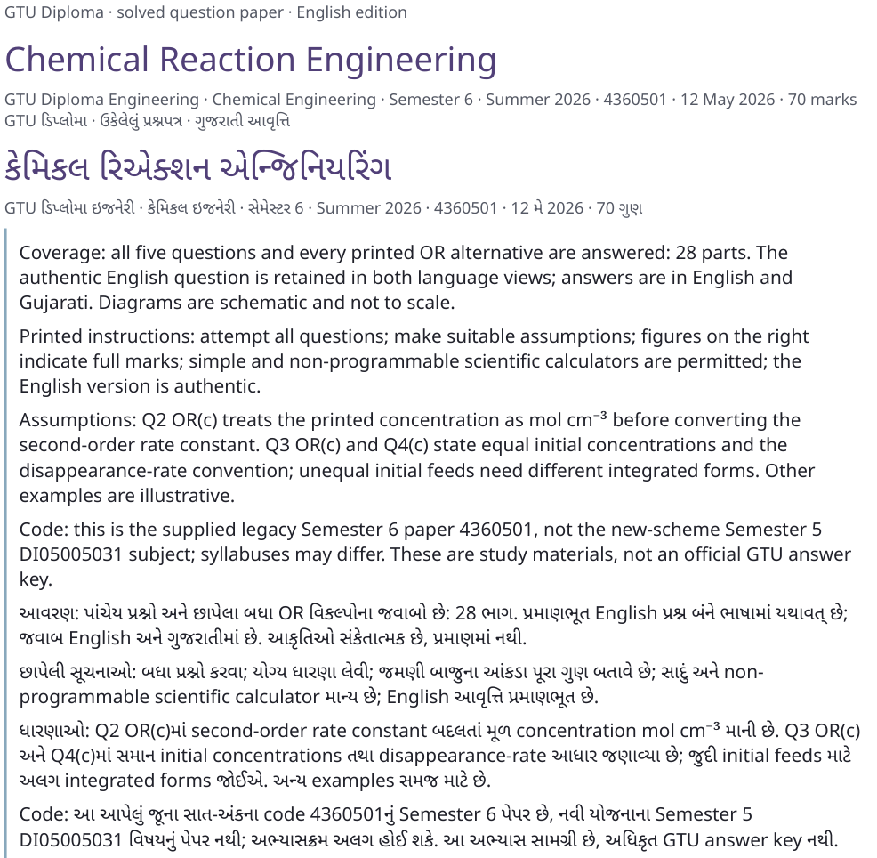
Question 1
Q1 · Reaction types, rates and temperature
Q.1 (a) · Explain Reversible and Irreversible reaction with example. · 3 marks
Reversible reaction: both forward and reverse reactions can occur; an irreversible reaction has a negligible reverse rate under the stated conditions.
• A reversible system can approach dynamic equilibrium when forward and reverse rates become equal.
• An effectively irreversible reaction proceeds mainly towards products over the operating conditions.
Examples: N₂O₄ ⇌ 2 NO₂ is reversible; combustion of methane is normally treated as irreversible.
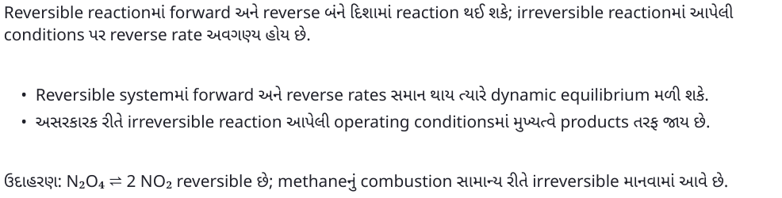
Q.1 (b) · Differentiate Elementary reaction and non-elementary reaction. · 4 marks
An elementary reaction is a single molecular step; a non-elementary overall reaction is described by two or more elementary steps.
![Q.1 (b): preserved source formula, table or diagram, page 2. Extracted text context (formula notation may be incomplete): Point Elementary Non-elementary overall Mechanism One elementary step. Multiple steps, possibly with intermediates. Rate law For a forward elementary step, each reactant power equals its molecular count in that step. Determine the overall rate law experimentally or from a validated mechanism. Order For the elementary step, order equals molecularity under the usual mass- action model. Overall order need not equal coefficients in the overall equation. Example Illustrative single step A + B → P: rate = k CACB. Catalytic decomposition of H₂O₂ proceeds through steps; its overall equation alone does not give its rate law.](summer-2026.assets/0002.webp)
Limitation: an overall balanced equation does not prove its mechanism or rate law.
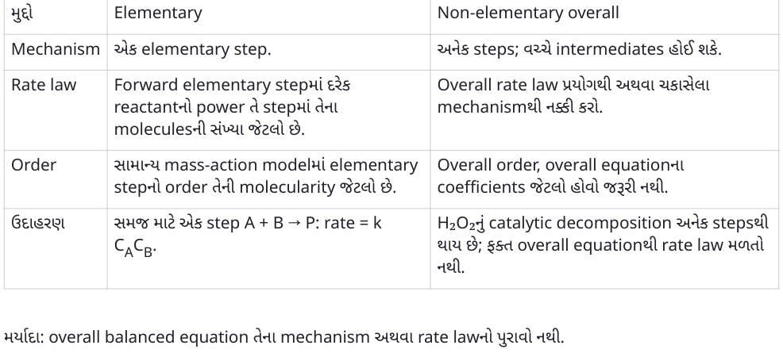
Q.1 (c) · Explain various form of rate of reaction and their relation. · 7 marks
A reaction rate may be expressed per reaction volume, catalyst mass or active surface. The basis and stoichiometric sign must be stated.
Species and reaction-extent rates
For aA + bB → cC + dD, a, b, c and d are positive stoichiometric coefficients.
2. Volume basis — Rate per reaction volume: mol L⁻¹ min⁻¹, for example.
3. Catalyst mass basis — Rate per mass of catalyst: mol kgcat⁻¹ min⁻¹.
4. Surface basis — Rate per active catalyst area: mol mcat⁻² min⁻¹.
For the same region and compatible local or average rates, the volume-based species rate equals catalyst-mass rate × catalyst mass per reaction volume; an analogous relation uses active area per reaction volume.
Illustrative stoichiometric example
2 A → B at constant volume.
A disappears at 0.40 mol L⁻¹ min⁻¹.
1. Species rates — −rA = 0.40 mol L⁻¹ min⁻¹.
3. Product — rB = 0.20 mol L⁻¹ min⁻¹.
The reaction-extent rate is 0.20 mol L⁻¹ min⁻¹ on this volume basis.
Do not use −dCA per dt as the species rate in a variable-volume batch without accounting for dilution or concentration.
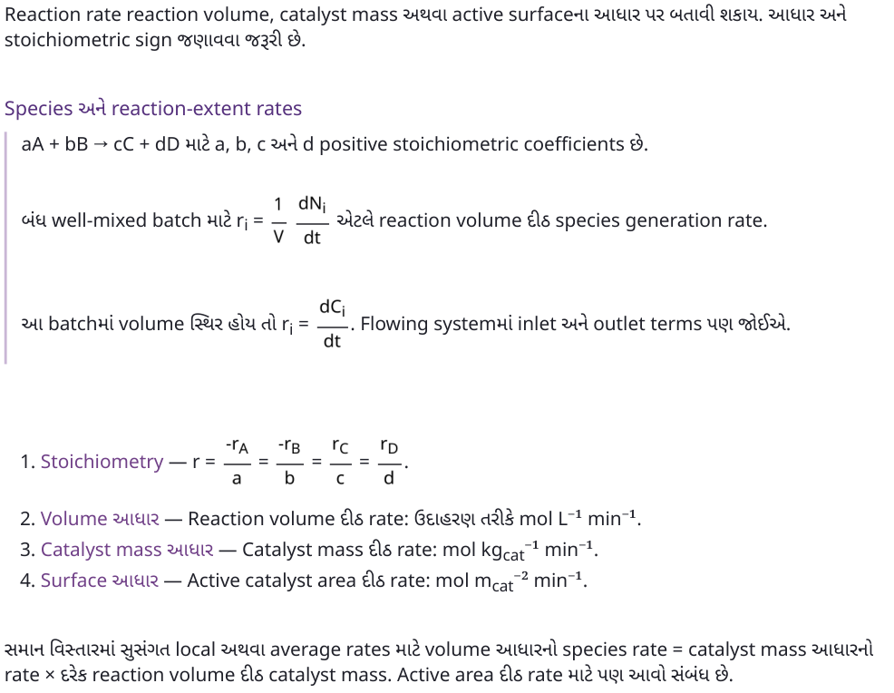
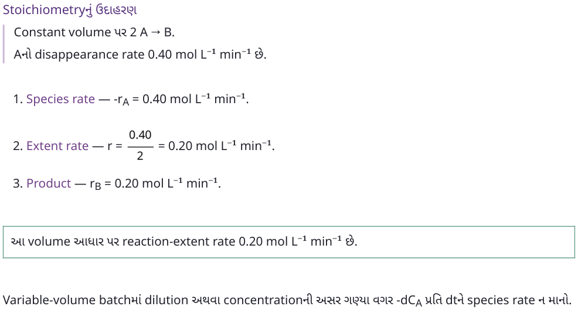
Q.1 (c) · Define rate constant? Explain its temperature dependency from Arrhenius law. · OR · 7 marks
A rate constant k is the proportionality factor in a specified rate law at fixed conditions. The Arrhenius law relates k to absolute temperature and helps estimate temperature sensitivity for reactor design.
Equation and meaning

k = rate constant on the stated concentration and time basis.
A = pre-exponential factor; Ea = activation energy.
R = gas constant; T = absolute temperature in K.
Two-temperature relationship
2. At two temperatures — Subtract the expressions for T₁ and T₂, assuming the same A and Ea over the range.

A straight ln k versus inverse-temperature plot has slope −Eₐ divided by R.
Illustrative calculation
Ea = 50,000 J mol⁻¹; R = 8.314 J mol⁻¹ K⁻¹.
T₁ = 300 K; T₂ = 310 K; assume constant A and Ea.

For this example, k₂ is about 1.91 times k₁.
With positive Ea, k increases as T rises. A and Ea may vary over a broad temperature range, and changing concentrations can change the measured reaction rate independently of k.

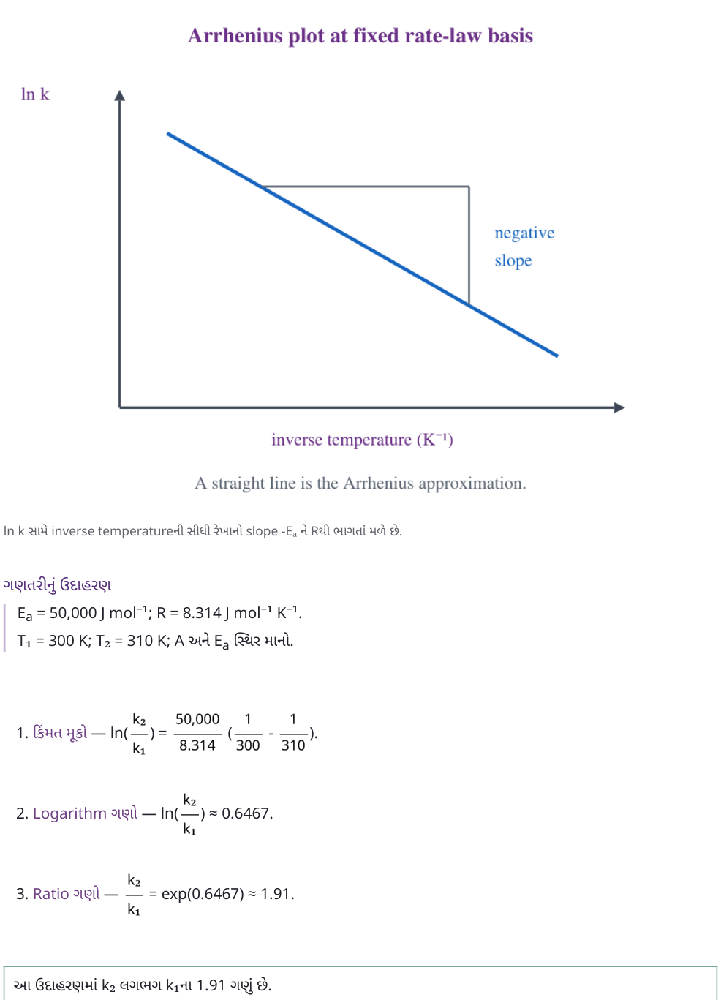
Question 2
Q2 · Factors, classification and rate constants
Q.2 (a) · List out the variable affecting the rate of reaction. · 3 marks
Reaction rate depends on the chemical state and conditions of the system.
• Reactant concentrations, or partial pressures for gases.
• Temperature and the presence or activity of a catalyst.
• For heterogeneous systems, contact area and mass transfer; light can matter for photochemical reactions.
Example: increasing temperature often speeds an ordinary reaction at the same concentrations.
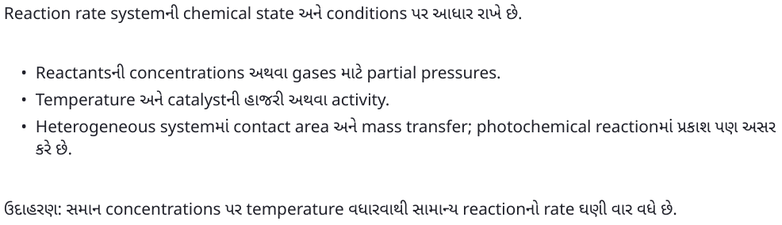
Q.2 (b) · Explain Endothermic and Exothermic reaction with example. · 4 marks
Heat of reaction distinguishes an exothermic reaction from an endothermic one at specified conditions.
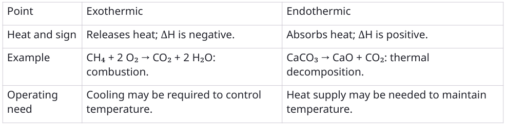
The sign of ΔH describes the energy change, not by itself how fast the reaction occurs.
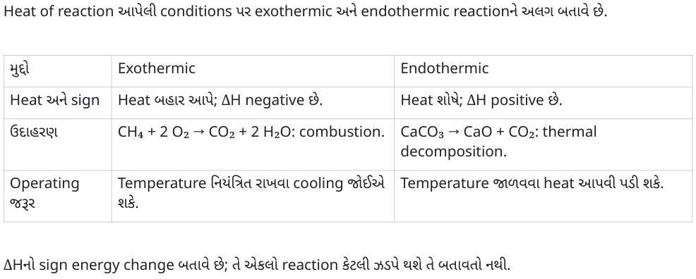
Q.2 (c) · Classify chemical reaction with example. · 7 marks
Reaction classification organizes reactions on independent bases; a reaction can belong to one type in each classification.
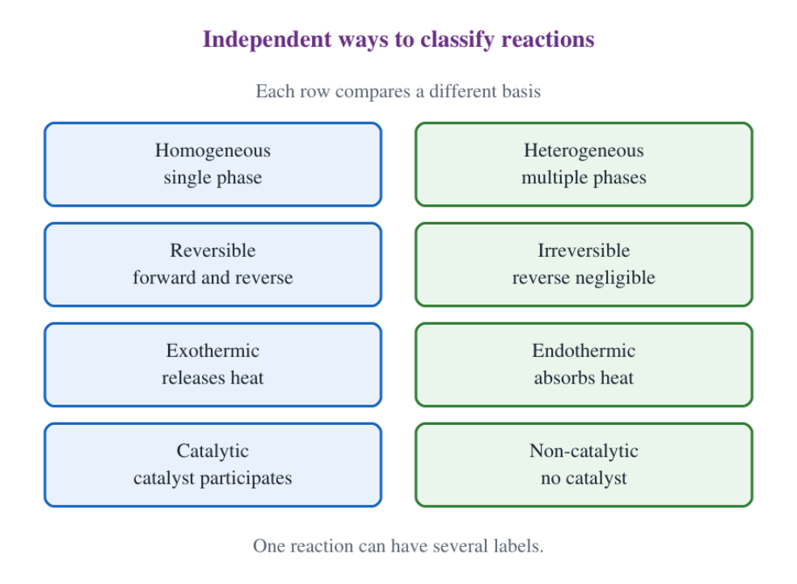
The pairs are different classification bases, not mutually exclusive labels across rows.
![Q.2 (c): preserved source formula, table or diagram, page 11. Extracted text context (formula notation may be incomplete): Basis Types and examples Phase Homogeneous: aqueous acid–base neutralization; heterogeneous: carbon solid reacting with oxygen gas. Direction Reversible: N₂O₄ ⇌ 2 NO₂; effectively irreversible: methane combustion under ordinary operating conditions. Heat effect Exothermic: methane combustion; endothermic: thermal decomposition of CaCO₃. Catalyst Catalytic: H₂O₂ decomposition with MnO₂; non-catalytic: aqueous HCl–NaOH neutralization without a catalyst. Mechanism Elementary: one elementary event; non-elementary: multiple steps with possible intermediates. Kinetics Zero, first, second or other order according to the experimentally established rate law; molecularity applies to an elementary step.](summer-2026.assets/0025.webp)
Example: the same combustion can be heterogeneous and exothermic. Classification is not enough to determine the rate law or reactor size; conditions and data matter.
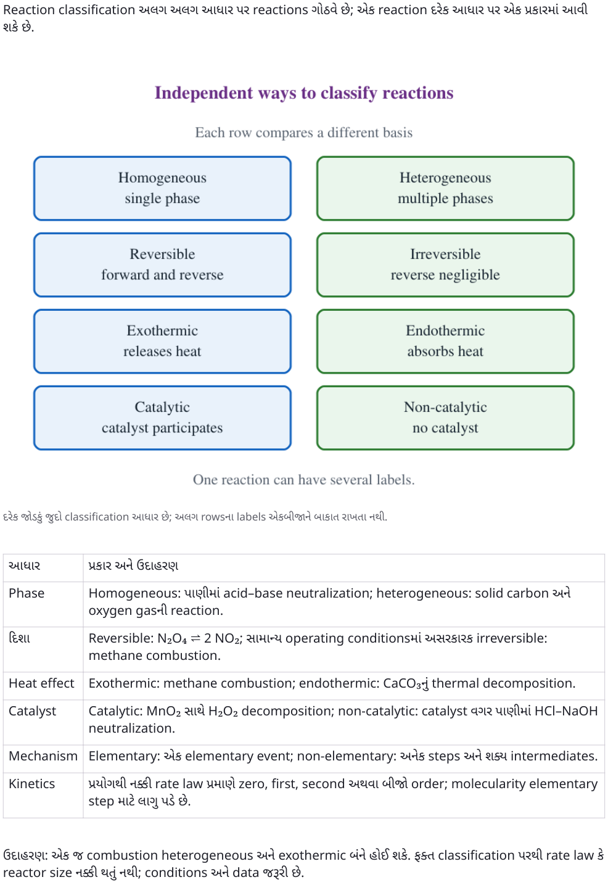
Q.2 (a) · Define rate of chemical reaction and its mechanism. · OR · 3 marks
Rate of reaction is the change in amount of a species due to reaction per unit reaction volume and time; disappearance of reactant A is reported as a positive value.

• A typical unit is mol L⁻¹ min⁻¹.
• In a closed constant-volume batch, a falling reactant concentration gives a positive disappearance rate; flowing systems also require inlet and outlet terms.
Mechanism is the sequence of elementary steps by which reactants become products; it must be supported by evidence, not just the net equation.
Example: if CA falls at 0.2 mol L⁻¹ min⁻¹ in a constant-volume batch, −rA = 0.2 mol L⁻¹ min⁻¹.
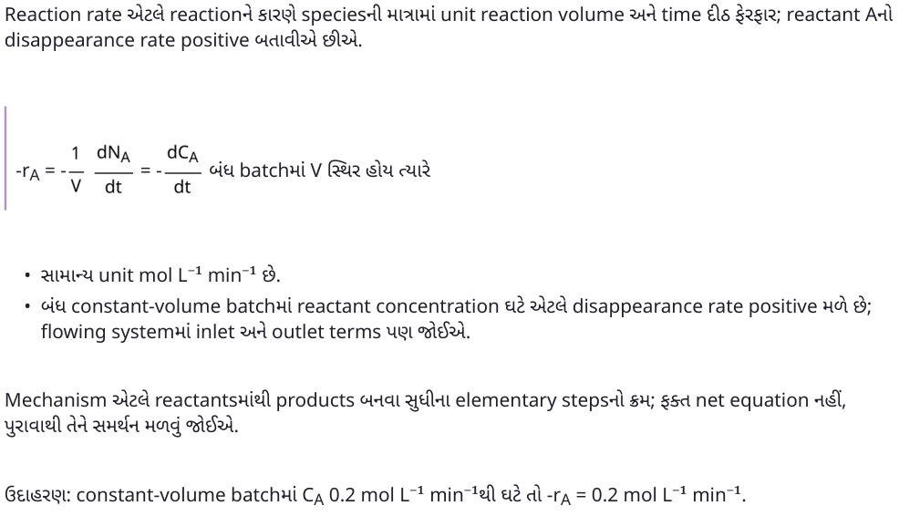
Q.2 (b) · What is rate constant and write its unit and Equation. · OR · 4 marks
The rate constant k is the proportionality factor in a specified rate law at fixed conditions.
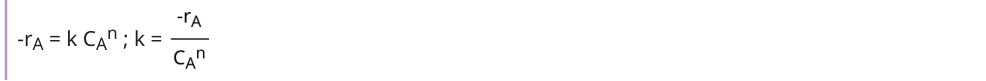
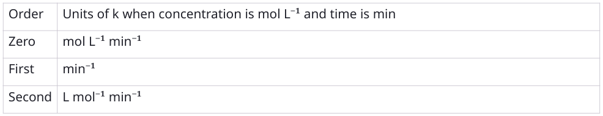
Example: for −rA = k CA², k has second-order units. In general its units are concentration1−n time⁻¹; k changes with temperature and catalyst conditions.
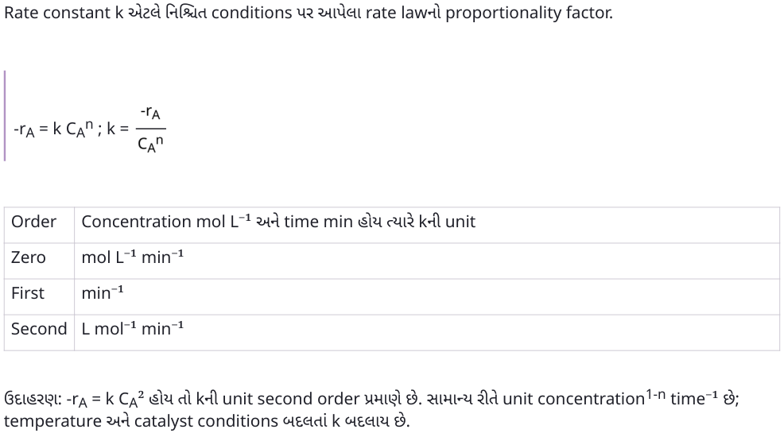
Q.2 (c) · A chemical reaction has a rate given by -rA = 0.0045 CA2 mol/cm3.min If the concentration is to be expressed in mol/lit. and time in hrs. what would be the value and unit of rate constant. · OR · 7 marks
Convert the second-order rate constant together with both concentration and time units; changing the rate unit alone is not enough.
Given and assumption
Printed law: −rA = 0.0045 CA² in mol cm⁻³ min⁻¹.
Assume CA in the printed law is in mol cm⁻³.
Thus kold = 0.0045 cm³ mol⁻¹ min⁻¹.
1 cm³ = 0.001 L; 1 h = 60 min.
Step-by-step solution
knew = 2.70 × 10−4 L mol⁻¹ h⁻¹.
Independent unit check
Take CA = 1 mol L⁻¹ = 0.001 mol cm⁻³.
1. Old-basis rate — −rA = 0.0045 × (0.001)² = 4.5 × 10−9 mol cm⁻³ min⁻¹.
2. Convert the rate — 4.5 × 10−9 × 1000 × 60 = 2.70 × 10−4 mol L⁻¹ h⁻¹.
3. New-basis rate — knew × (1 mol L⁻¹)² gives the same 2.70 × 10−4 mol L⁻¹ h⁻¹.
The coefficient is not 270: a second-order k contains one volume unit in its numerator. Its numeric value depends on the concentration units.
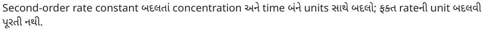
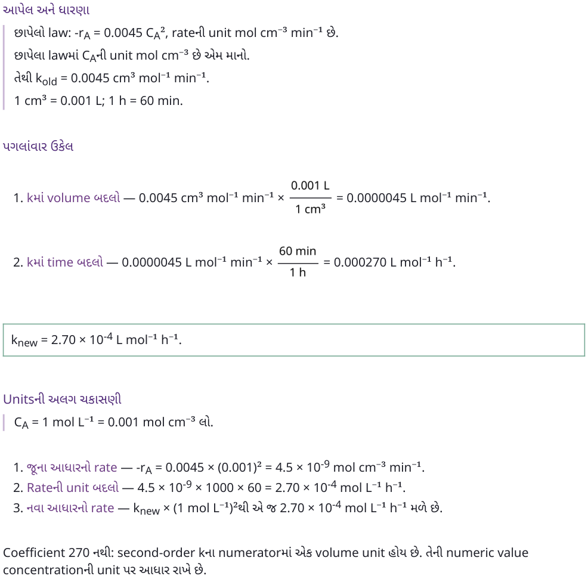
Question 3
Q3 · Kinetic data, half-life and second order
Q.3 (a) · Explain scope and importance of chemical reaction Engineering. · 3 marks
Chemical reaction engineering combines reaction kinetics with reactor design and operation.
• Measure or model reaction rates and choose a suitable reactor.
• Use material and energy balances to estimate reactor size, conversion and temperature control.
• Improve yield and selectivity while accounting for mixing and transport.
• Consider safety, catalyst performance and cost when scaling up.
Example: laboratory kinetic data help size a continuous reactor for a required product output.
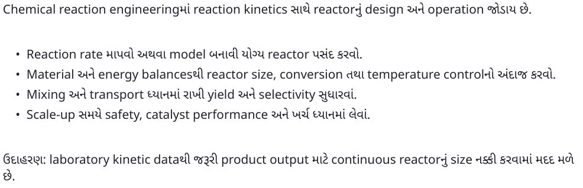
Q.3 (b) · Give Difference between integral and differential method. · 4 marks
Integral and differential methods analyze batch kinetic data in different ways to identify a rate law.
![Q.3 (b): preserved source formula, table or diagram, page 17. Extracted text context (formula notation may be incomplete): Point Integral method Differential method Use of data Test concentration–time data against integrated candidate equations. Estimate instantaneous slopes and relate rate to concentration. Order Choose a candidate order and check its linearized plot or fit. For a power law, slope of ln rate against ln concentration estimates order. Noise Avoids numerical differentiation and is usually less sensitive to noise. Differentiation amplifies noise; smoothing and uncertainty matter. Limitation Requires a suitable proposed integrated model. Reliable local slopes need enough accurate data.](summer-2026.assets/0037.webp)
Example: for first order, a straight ln CA versus time plot supports the integral model.
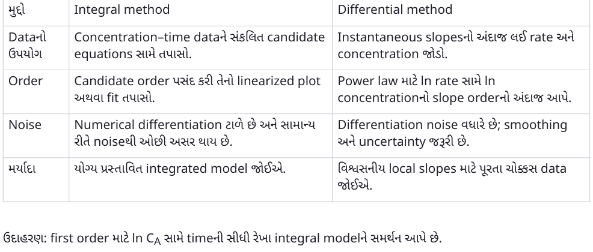
Q.3 (c) · Explain Half – life method in details. · 7 marks
The half-life method identifies reaction order by comparing half-lives measured at different initial concentrations at the same temperature.
Definition and assumptions
At t½, CA = CA0 divided by 2.
Assume a single irreversible power law −rA = k CAn, constant volume and constant k.
Step-by-step method
1. Run several batches with different CA0 at the same temperature and measure concentration versus time.
2. For each run, find the time at which its own concentration reaches half its starting value.
3. Compare t½ with CA0; a log t½ versus log CA0 plot has slope 1 − n for this model.
4. Estimate k from the matching integrated law and check the fit against the full data set.
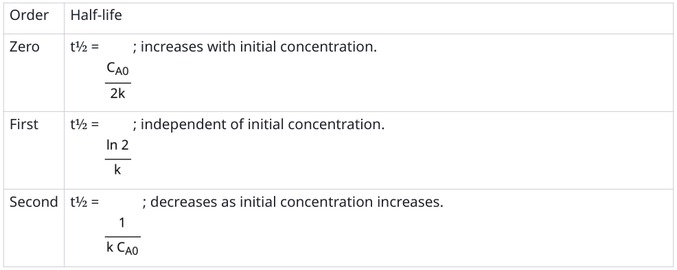
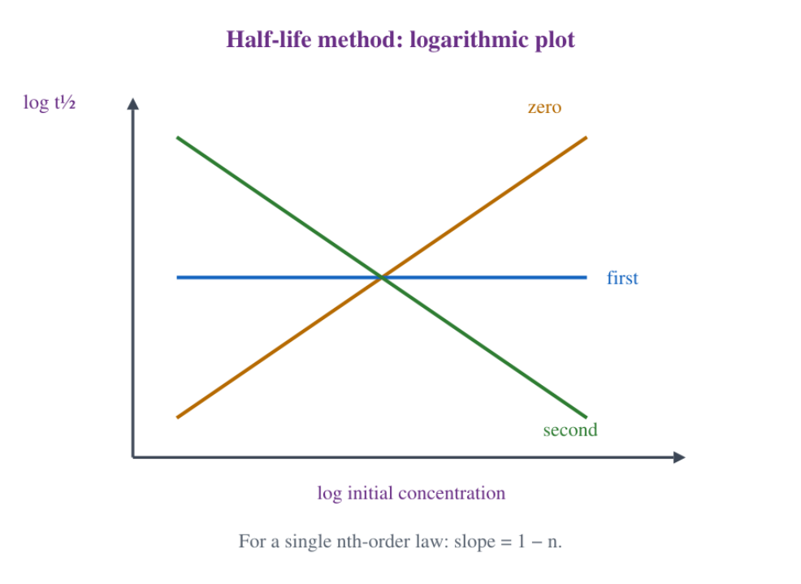
Illustrative log–log trends for three orders; each line represents a different hypothetical reaction.
Worked example
Suppose runs at 1 and 2 mol L⁻¹ both have t½ = 6.93 min.
1. Identify — A constant half-life is consistent with n = 1.
4. Calculate — k = 0.100 min⁻¹.
Illustrative result: first order, k ≈ 0.100 min⁻¹.
Limitations: measurement noise, side reactions, changing temperature or volume, and an invalid power-law model can distort the trend. A few half-lives alone do not prove a mechanism.
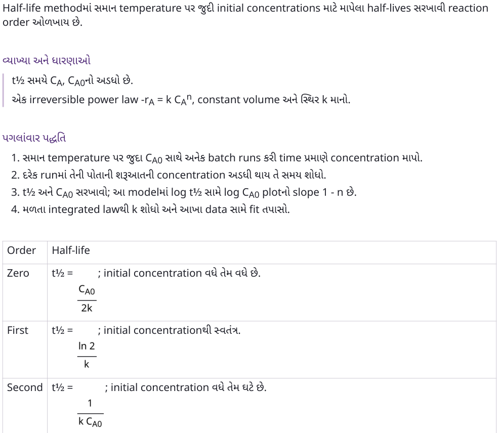
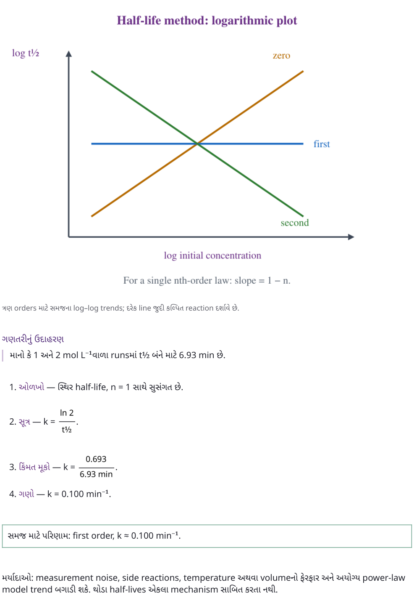
Q.3 (a) · Define 1) Molecularity 2) Order of reaction. · OR · 3 marks
Molecularity is the number of reacting molecules or particles in one elementary event, counting repeated molecules separately; order is the sum of concentration exponents in a specified rate law.
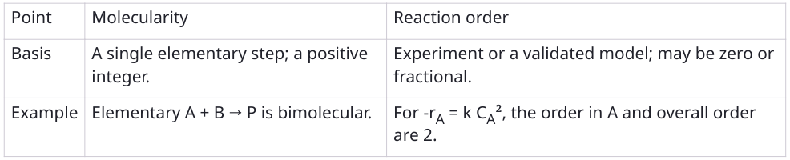
Do not assign molecularity to an unverified overall multi-step reaction; its order need not follow its stoichiometry.
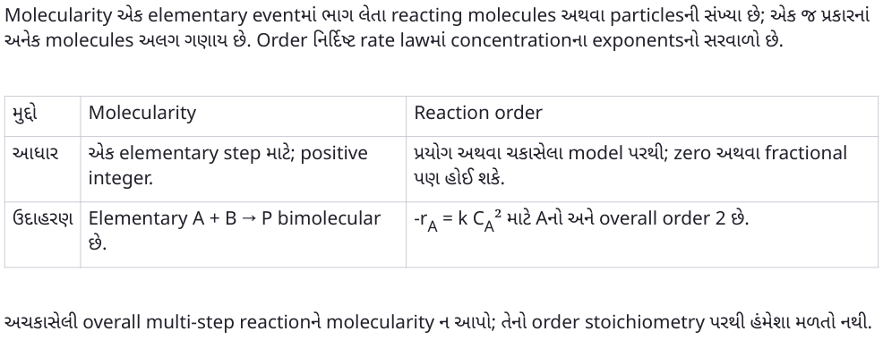
Q.3 (b) · How we can obtain kinetic data? Explain with example. · OR · 4 marks
Kinetic data are measured concentrations or other composition indicators at known times and controlled conditions.
1. Charge a well-mixed batch with known initial composition and maintain a measured temperature.
2. Take small samples at known times and measure CA, for example by titration or a calibrated spectrophotometer.
3. Fit concentration–time data to candidate laws or calculate rates, then repeat at other initial concentrations and temperatures.
Example: a concentration table at fixed temperature can be tested for a straight ln CA versus time line. Account for sampling, temperature changes and mass-transfer limitations.
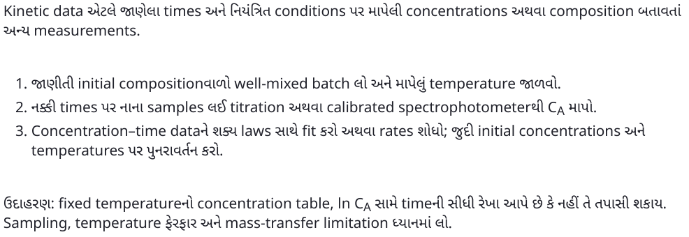
Q.3 (c) · Derive integrate rate equation for irreversible Bi-molecular type second order reaction in terms of concentration. · OR · 7 marks
Derive the integrated law for an irreversible bimolecular second-order reaction in a well-mixed constant-volume batch.
Assumptions and notation
A + B → products; initial concentrations CA0 = CB0 = a.
Stoichiometry is one A per B, so CA = CB during the batch.
Temperature and k are constant; define k on the disappearance rate of A.
Step-by-step derivation
3. Integrate — Integrate from a to CA and from 0 to t.
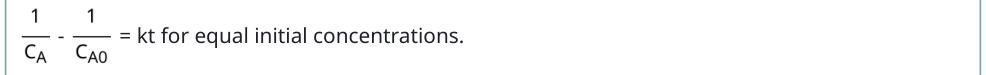
Illustrative check
CA0 = CB0 = 2.0 mol L⁻¹.
k = 0.10 L mol⁻¹ min⁻¹; t = 5.0 min.
3. Concentration — CA = 1.0 mol L⁻¹; conversion is 0.50.
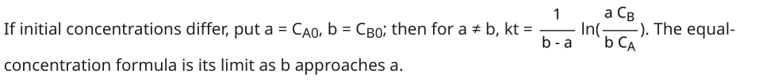
For 2 A → products, a rate constant defined for reaction extent instead of A disappearance differs by a stoichiometric factor of 2. Overall second order alone does not prove an elementary mechanism.
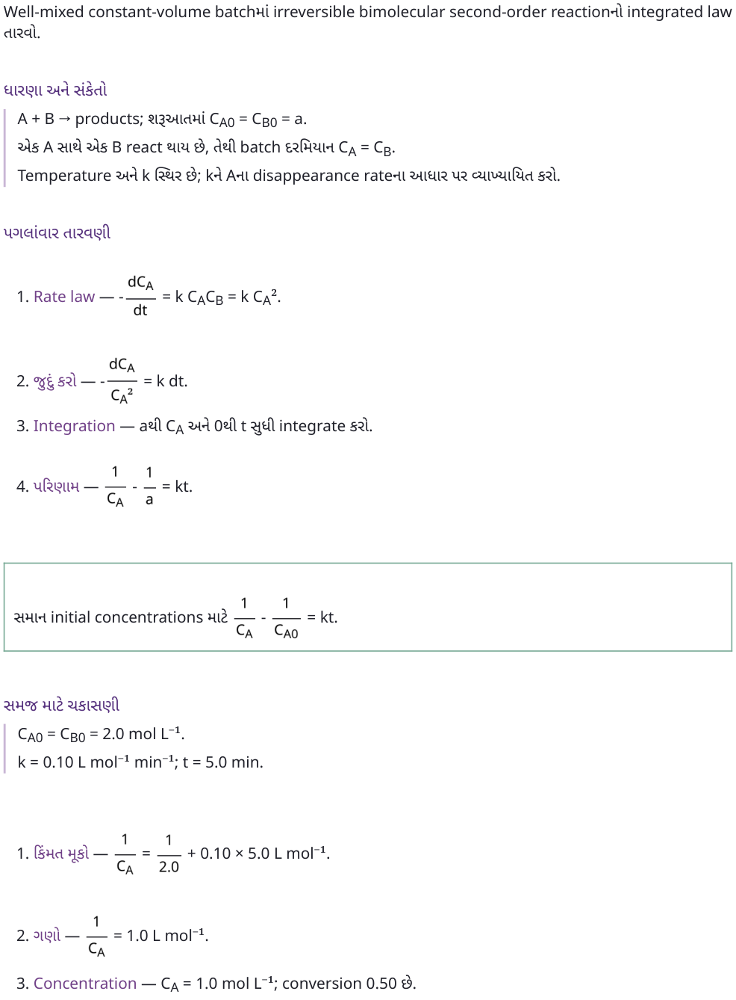
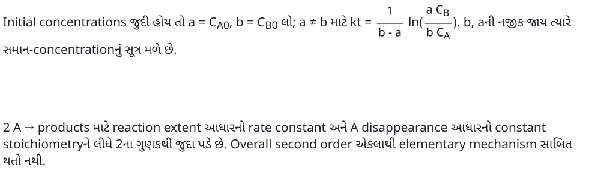
Question 4
Q4 · Reaction orders and plug flow
Q.4 (a) · Explain rate equation for nth order in details. · 3 marks
Nth-order rate law for a single reactant on a disappearance basis is −rA = k CAn.
• n is the experimentally determined order in A for this stated law.
• At fixed conditions k has units concentration1−n time⁻¹.
• The equation is a rate law, not proof that the overall reaction is a single elementary step.
Example: n = 2 gives −rA = k CA²; doubling CA makes the rate four times larger if k stays fixed.
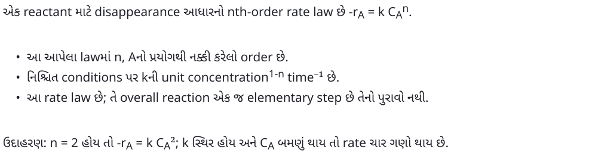
Q.4 (b) · What are the advantages, disadvantages and applications of batch reactor. · 4 marks
A batch reactor is charged, closed during reaction and emptied after the run.
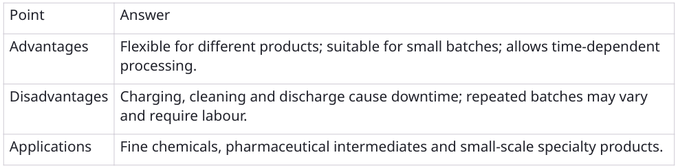
Example: a multipurpose stirred vessel can be cleaned and reused for another product; heat removal and safe reaction control remain important.
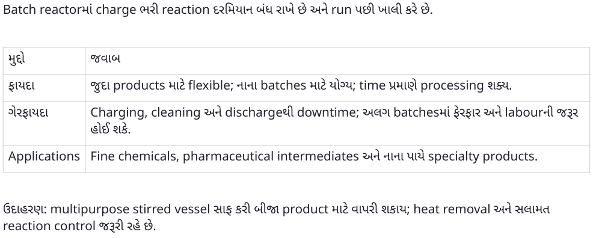
Q.4 (c) · Derive integrate rate equation for irreversible Tri-molecular type Third order reaction in terms of concentration. · 7 marks
Derive an irreversible third-order integrated law for a constant-volume, well-mixed batch on the disappearance basis of A.
Assumptions
For the elementary model A + B + C → products, one molecule of each reactant is consumed per elementary event.
Initially CA0 = CB0 = CC0, so CA = CB = CC during reaction.
Define k on A disappearance: −rA = k CACBCC = k CA³; k is constant at the specified temperature.
Step-by-step derivation
3. Integrate — Integrate from CA0 to CA and 0 to t.
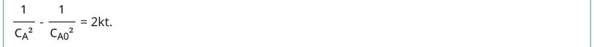
Illustrative check
CA0 = 2.0 mol L⁻¹.
k = 0.050 L² mol⁻² min⁻¹; t = 5.0 min.
3. Concentration — CA ≈ 1.155 mol L⁻¹.
Check: CA has decreased from 2.0 mol L⁻¹. Unequal reactant concentrations need their own integrated form. For elementary 3 A → products, k based on A disappearance is three times a constant defined for reaction extent; third order alone does not establish a trimolecular elementary event.
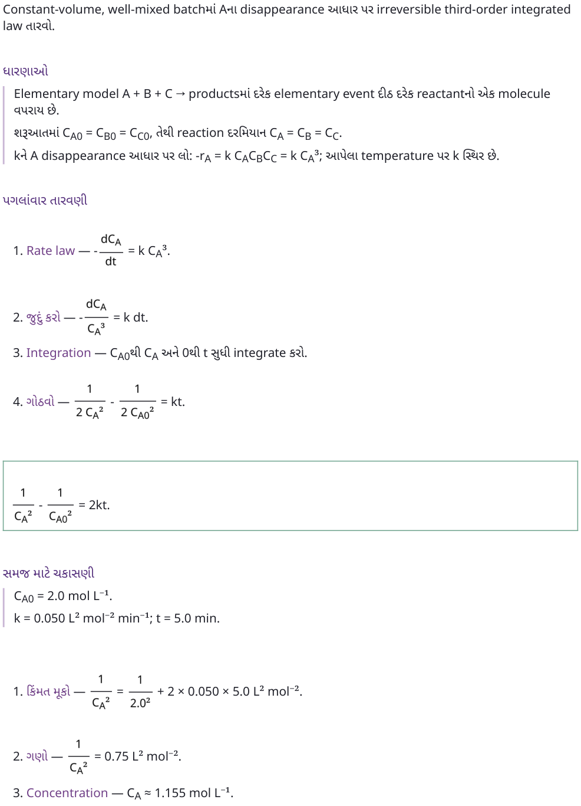
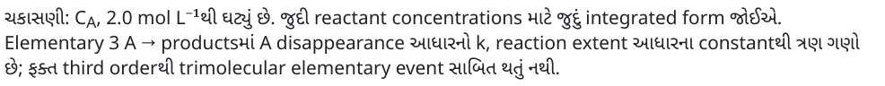
Q.4 (a) · Explain Temperature dependent term of rate equation. · OR · 3 marks
The temperature-dependent term of an Arrhenius rate law is the rate constant k(T).
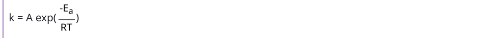
• T is absolute temperature in kelvin; Ea and gas constant R must use compatible energy units.
• For positive Ea and approximately constant A, k increases as T increases.
• The rate also depends on concentration; compare k at the same rate-law basis.
Example: at the same concentrations, heating a positive-Ea reaction normally increases its rate.
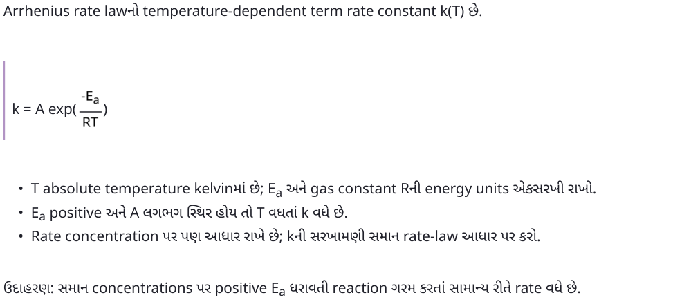
Q.4 (b) · Explain Integrate rate equation for zero order of irreversible. · OR · 4 marks
For an irreversible zero-order reaction in a constant-volume batch, the disappearance rate is independent of CA until the model ceases to apply.
At t = 0, concentration is CA0; k has units mol L⁻¹ min⁻¹ if time is in minutes.
1. Separate — dCA = −k dt.
2. Integrate — CA − CA0 = −kt.
3. Rearrange — CA = CA0 − kt.
CA = CA0 − kt, valid while reactant remains and zero-order kinetics holds.
Example: CA0 = 1.0 mol L⁻¹ and k = 0.20 mol L⁻¹ min⁻¹ give CA = 0.60 mol L⁻¹ at 2 min. Do not extrapolate to negative concentration.
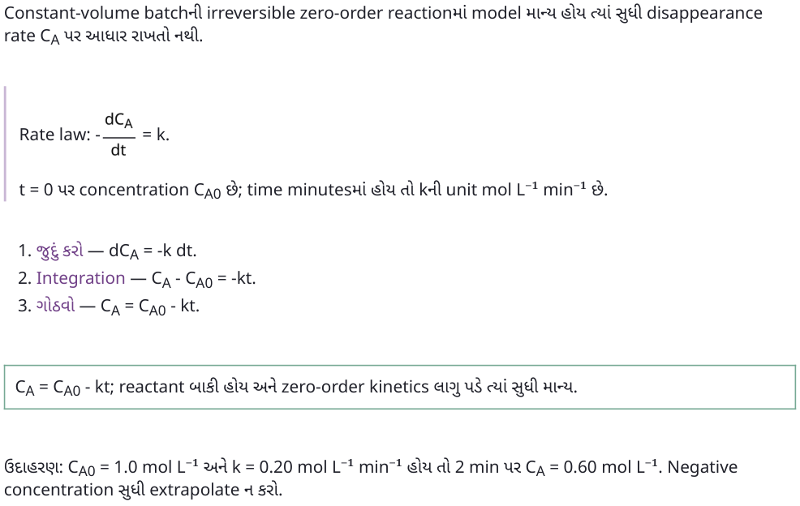
Q.4 (c) · Explain PFR (Plug flow reactor) with advantages and applications. · OR · 7 marks
A plug-flow reactor (PFR) is a continuous reactor whose ideal model has no axial mixing and uniform properties across each cross-section.
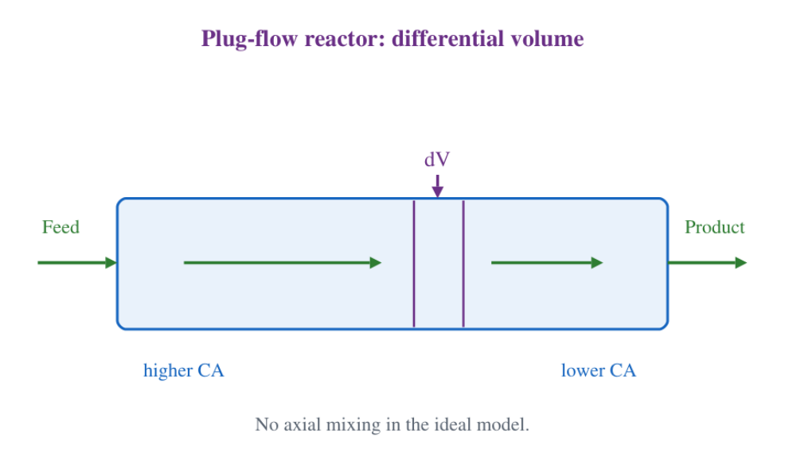
A tubular reactor with inlet, outlet, flow direction and a differential volume element.
Construction — part and purpose
1. A tube or bank of tubes carries reacting fluid from inlet to outlet.
2. Jackets or other heating and cooling arrangements can control temperature when required.
3. Instruments measure and help control flow and operating conditions.
Working — step and reason
1. Continuous feed enters the tube and travels forward.
2. Each ideal fluid element reacts as it moves, so concentration and rate generally vary along the length.
3. Product leaves continuously. A material balance uses the local rate in each differential volume.
Advantages and applications
• Continuous operation and potentially high conversion per unit volume for many positive-order reactions compared with a single CSTR at the same conditions.
• Tubular geometry can be useful for high-throughput processing and controlled heating or cooling.
• Applications include suitable tubular polymerization, thermal cracking and other continuous chemical reactions.
Illustrative first-order comparison
Assume an isothermal, constant-density liquid with −rA = k CA.
Take k = 0.10 min⁻¹ and target conversion X = 0.50.
At X = 0.50, τPFR = 6.93 min and τCSTR = 10 min for this example.
Limitation: temperature gradients, pressure drop or axial dispersion can make a real tube depart from ideal plug flow. The reactor comparison is not universal for every kinetic law.
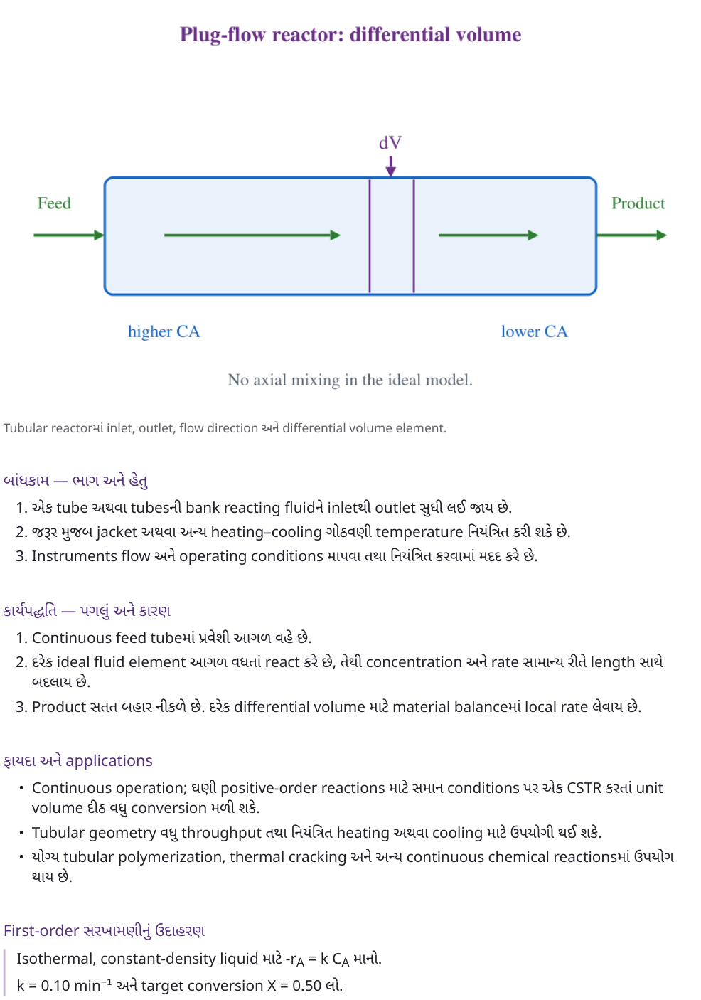
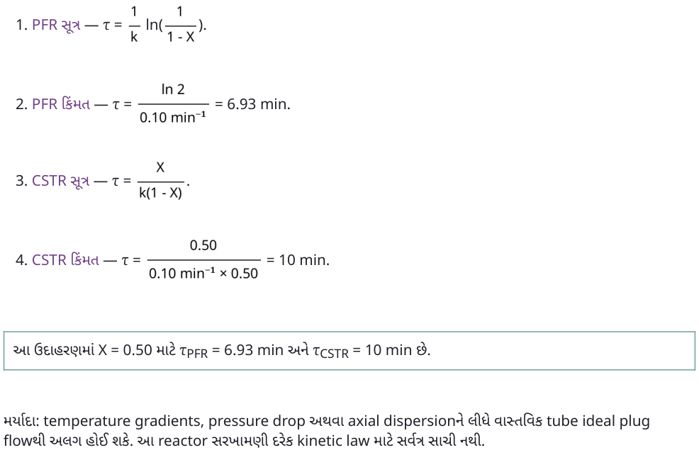
Question 5
Q5 · Reactor equipment and performance
Q.5 (a) · Draw neat Diagram of Bubble column reactor. · 3 marks
A bubble-column reactor contacts gas and liquid as gas is dispersed through a bottom sparger.
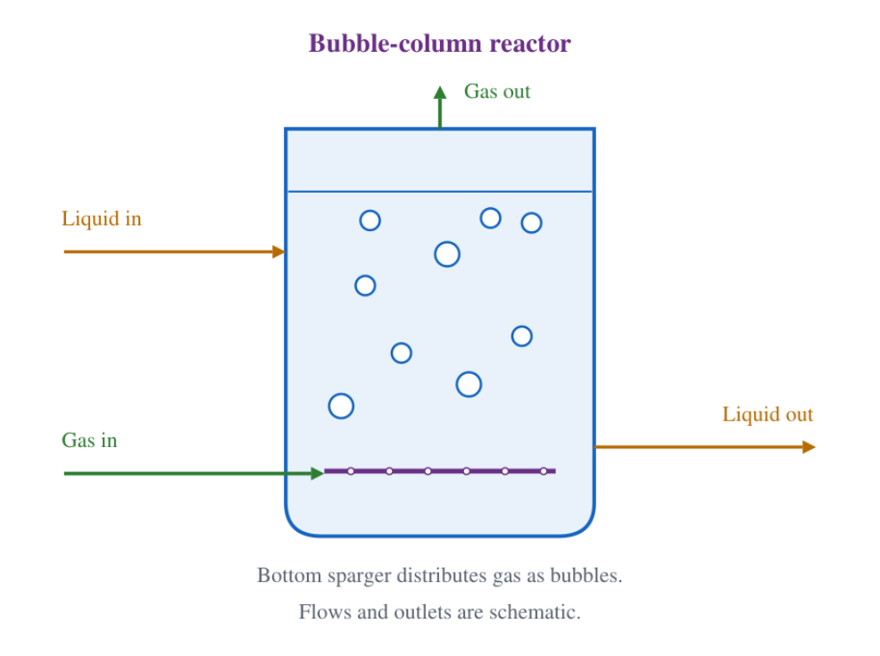
Label the liquid inlet and outlet, gas inlet and outlet, and sparger.
Gas bubbles rise through liquid, promoting gas–liquid contact; the arrangement shown is schematic.
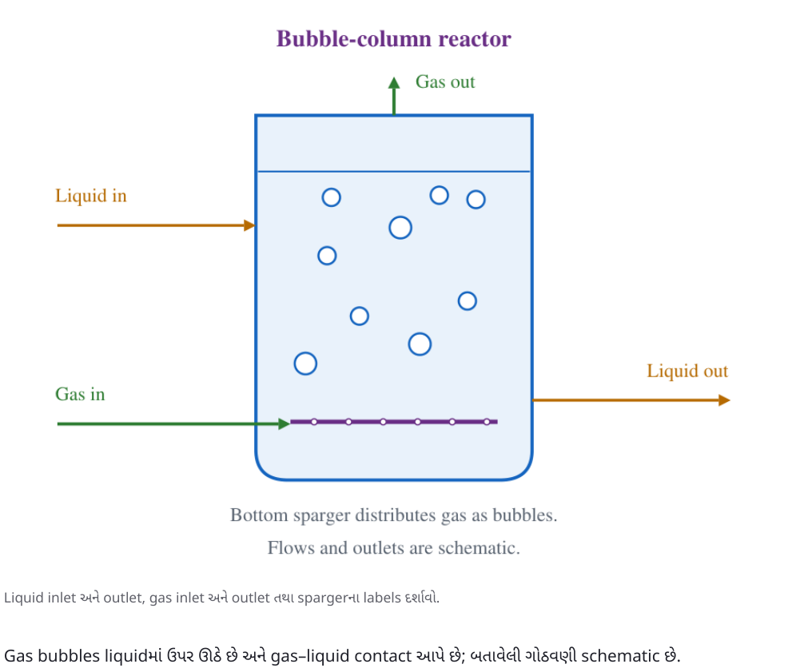
Q.5 (b) · Explain space time and space velocity. · 4 marks
Space time τ is reactor volume divided by inlet volumetric flow rate at specified inlet conditions. Space velocity is its reciprocal on that same basis.
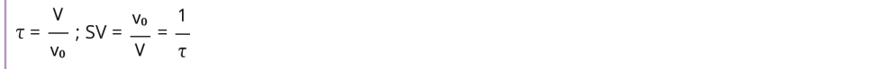
• V is reactor volume and v₀ is feed volume per unit time at the stated temperature and pressure.
• τ has units of time; SV has reciprocal-time units.
• For constant-density flow, τ equals V divided by the volumetric flow rate throughout the reactor.
Example: V = 100 L and v₀ = 10 L min⁻¹ give τ = 10 min and SV = 0.10 min⁻¹. For variable-density flow, space time is a reference quantity and need not equal actual holding time.
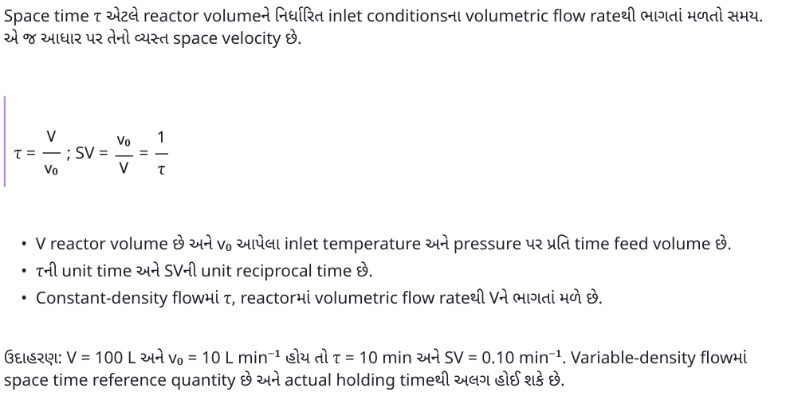
Q.5 (c) · Derive performance equation for Ideal batch reactor. · 7 marks
Derive the performance equation of an ideal batch reactor from the species material balance.
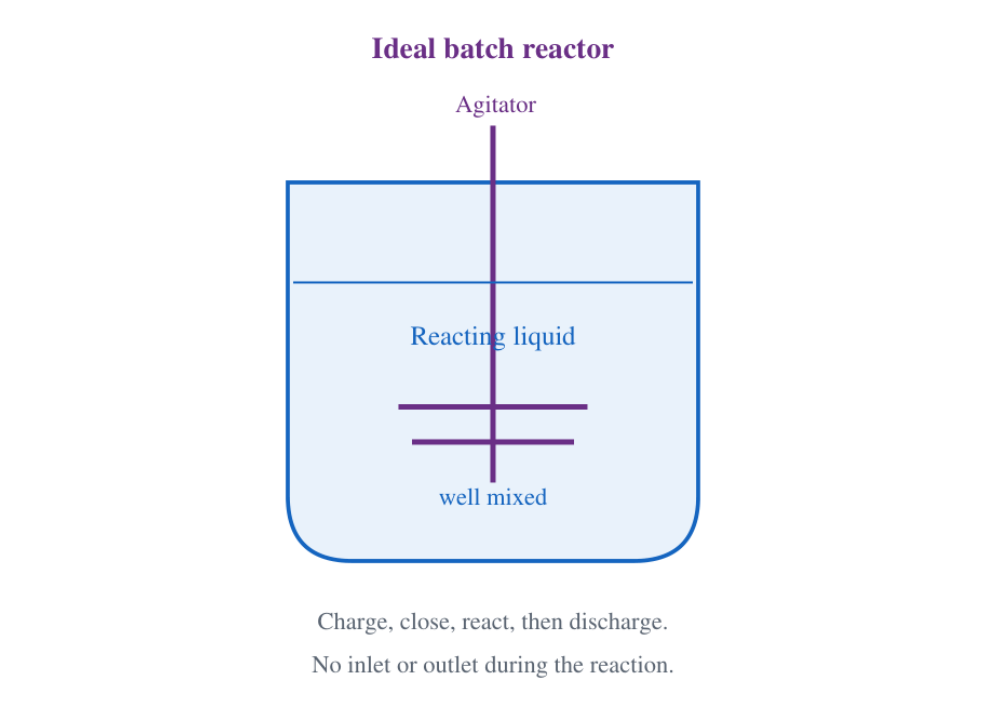
The ideal vessel is well mixed and closed during reaction.
Assumptions and notation
The vessel is well mixed; no inlet or outlet during reaction.
NA0 and NA are initial and current moles of A; rA is its signed rate per reaction volume.
Let X = (NA0 − NA) divided by NA0; initially X = 0.
Step-by-step derivation
1. General balance — Accumulation = input − output + generation.
3. Conversion — NA = NA0(1 − X), so dNA = −NA0 dX.
Illustrative first-order calculation
−rA = k CA, k = 0.10 min⁻¹, constant volume; target X = 0.50.
The result is reaction time only: charging, heat-up and discharge times are additional. Temperature- dependent k must be evaluated along a non-isothermal trajectory.
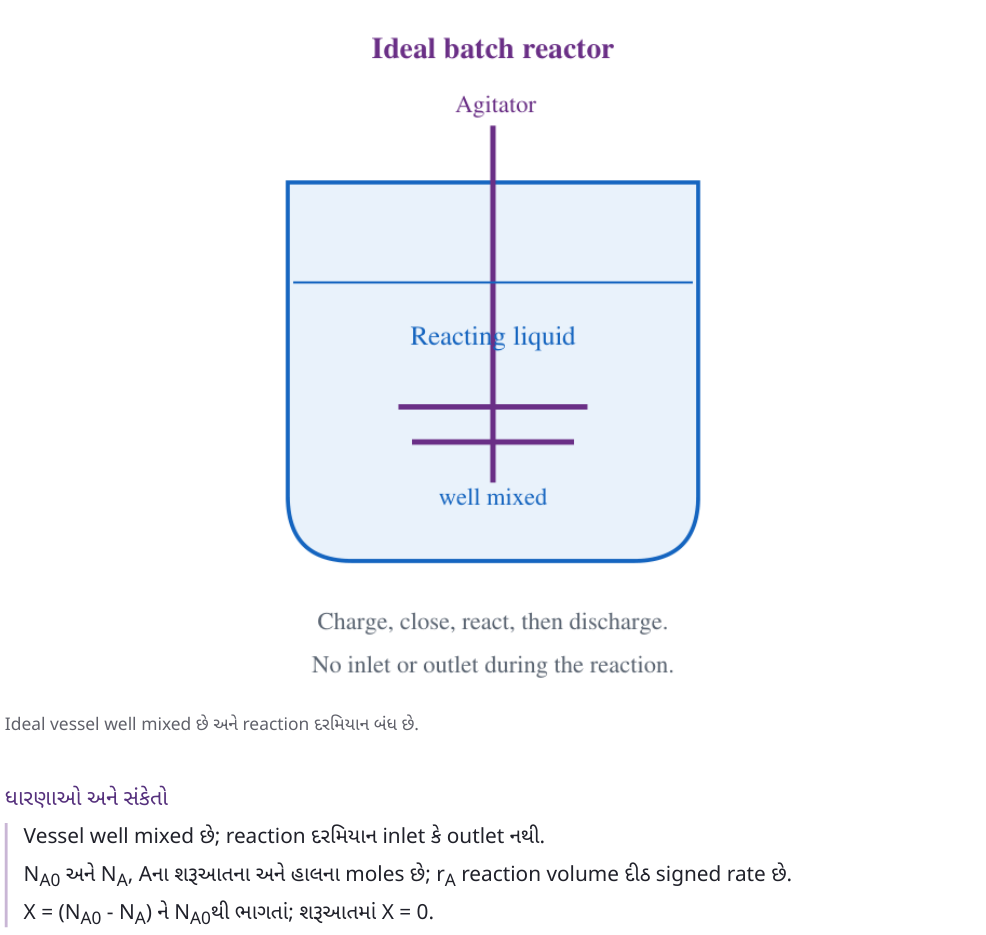
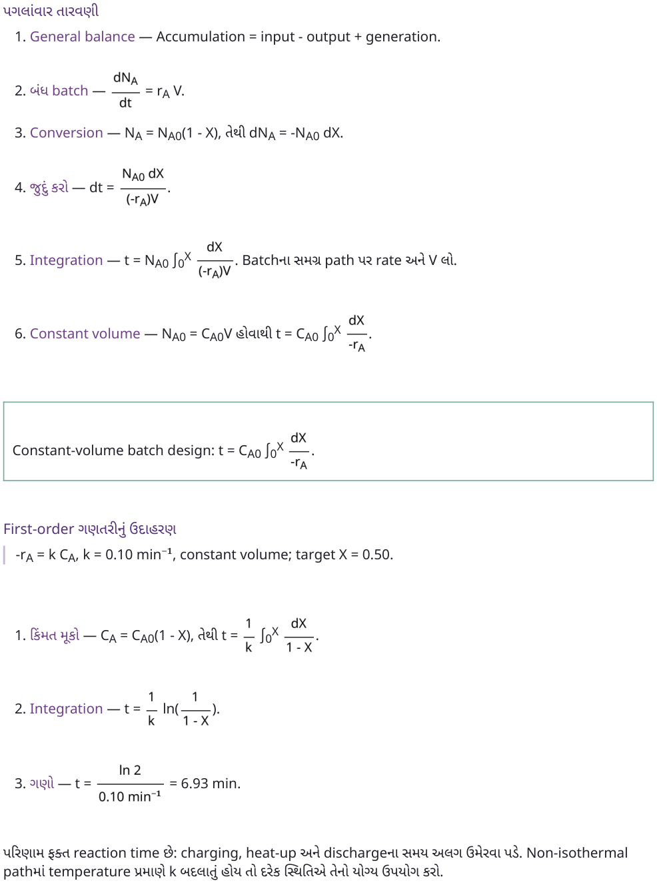
Q.5 (a) · Explain Fluidized bed reactor with diagram. · OR · 3 marks
Fluidized-bed reactor: upward fluid flow suspends solid particles so the bed behaves approximately like a fluid.

Gas enters below the distributor and passes through suspended solids.
Example: gas contacts catalyst particles in catalytic processing. Excessive velocity can carry solids out, requiring separation.
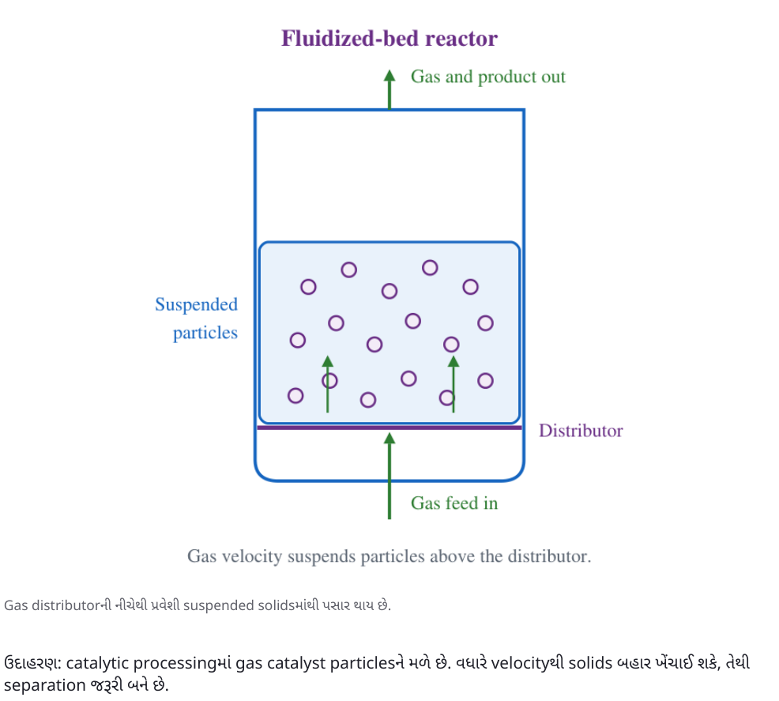
Q.5 (b) · Explain Slurry reactor. · OR · 4 marks
A slurry reactor suspends fine solid particles, often catalyst, in a liquid; a gas may also be dispersed through it.
Illustrative gas–liquid–solid stirred slurry; other slurry reactors need not use gas.
Construction and working
• A stirred vessel contains liquid and suspended solids; a sparger can introduce gas and an outlet removes slurry.
• Stirring maintains particle suspension and contact. Reactants transfer to catalyst particles and react.
• Separate the withdrawn solid from liquid product when needed, and recycle suitable catalyst.
Example: some hydrogenation processes use a liquid with suspended catalyst and hydrogen gas. Good contact and heat removal are useful, but catalyst recovery and mass-transfer resistance require attention.
Q.5 (c) · Derive general equation for performance for steady state mixed flow reactor. · OR · 7 marks
Derive the steady-state mixed-flow reactor performance equation using a material balance on reactant A.
In an ideal CSTR the outlet has the same composition as the well-mixed contents.
Assumptions and notation
Steady state: accumulation is zero. The tank is ideally mixed; the rate is uniform at outlet conditions.
FA0 and FA are inlet and outlet molar flow rates; V is reaction volume.
X = (FA0 − FA) divided by FA0.
Step-by-step derivation
1. Species balance — Accumulation = inlet − outlet + generation.
2. Steady state — 0 = FA0 − FA + rAV.
3. Rearrange — FA0 − FA = (−rA)out V.
4. Conversion — FA0 − FA = FA0X.
Constant-density first-order example
FA0 = v₀ CA0; τ = V divided by v₀.
−rA = k CA; CA,out = CA0(1 − X).
Take k = 0.10 min⁻¹ and X = 0.50.
3. Calculate — τ = 10 min; SV = 0.10 min⁻¹.
For variable-density flow, use the general molar-flow equation and evaluate exit concentration from the actual outlet flow; do not automatically use CA0(1 − X).